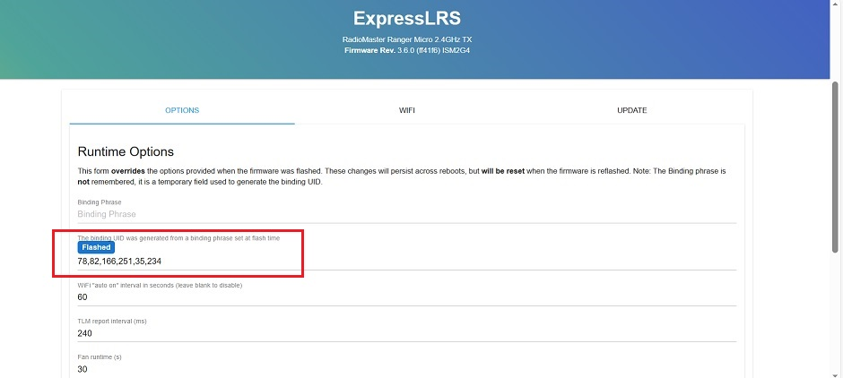
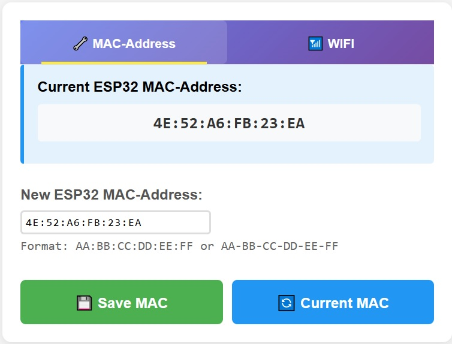
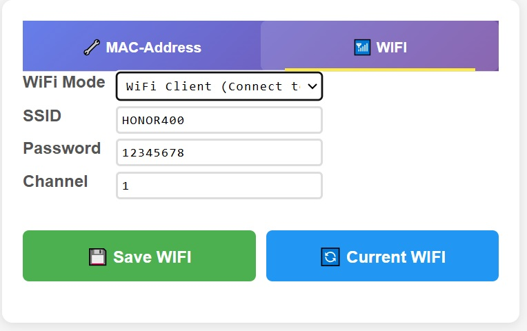

🛠 Прошивка и настройка платы ESP32
Для ретрансляции пакетов CRSF ESP-NOW телеметрии от пульта ExpressLRS в MAVLink телеметрию по UDP Wi-Fi необходима плата ESP32 со специальной прошивкой.
Прошивка ESP32 находится в открытом репозитории GitHub.
На текущий момент прошивка успешно собирается и проверена на плате типа ESP32-DevKitC V1(esp32dev) - ESP2CH340TYPE-С30, стоимостью 400руб на Ozon.
Для других типов плат ESP32 - просьба делать сборку прошивки из исходных файлов проекта и проверку работы самостоятельно. Репозиторий проекта на GitHub открыт для Ваших доработок. Краткая инструкция по Git прилагается на закладке Contributing
📚 Заливка прошивки в плату ESP32
1Скачайте файл прошивки с GitHub
В разделе release репозитория проекта скачайте крайнюю версию прошивки (2.1.0 Pre release на текущий момент) - файл esp32_.elf
2 Скачайте утилиту для прошивки платы ESP32
Утилиту espflash для прошивки платы можно загрузить здесь
3 Прошивка платы ESP32
Установите драйвера для платы (CH340 в моем случае).
Подключите плату ESP32 к компьютеру. В Диспетчере устрйств найдите какой COM порт она использует.
Скопируте утилиту espflash и файл прошивки в одну директорию. Запустите командную строку cmd, перейдите в командной строке в этот директорий.
Залейте прошивку в плату командой: espflash COMn файл
Где: файл - полное имя файла прошивки, COMn - n замените на номер порта в системе, например - COM5.
📚 Настройка прошивки
1Определение MAC адреса аппаратуры ELRS
Для настройки прошивки необходимо знание MAC адреса аппаратуры TX(пульта) ELRS, который определяется Binding-фразой.
Для определения MAC адреса зайдите в Web-конфигуратор TX ELRS и запишите MAC адрес. Переведите числа в 16-ричный формат.

MAC адрес аппаратуры
2Вход в web-конфигуратор прошивки платы ESP32
Включите питание платы ESP32.
После включения создается точка доступа Wi-Fi с именем mavlink и паролем для входа 12345678.
Подключитесь к точке доступа и откройте в интернет браузере страницу http://192.168.4.1 конфигуратора.

Конфигуратор
3 Установка MAC адреса
На странице "MAC-Address" конфигуратора введите MAC-адрес передатчика TX ELRS и сохраните его нажатием кнопки "Save MAC"
Установка MAC адреса
4 Настройка точки доступа ESP32
Перейдите на страницу "WIFI" конфтгуратора.
Установите режим "WiFi client", для подключения платы к внешней точке доступа на смартфоне (2.4ГГц), которую нужно предварительно настроить.
Введите SSID и пароль внешней точки доступа и нажмите кнопку "Save WiFi".

Настройка подключения к Wi-Fi смартфона
5 Завершение
После выполнения всех пунктов настройка завершена.
⚠️ Для подключения платы к смартфону в дальнейшем, необходимо сначала включить на нем точку доступа (2.4ГГц) и затем включить питание платы.
При отсутствии внешней точки доступа смартфона плата переходит в режим с собственной точкой доступа.